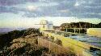

A
Tour of
the IOTA Site
An instructive approach to touring the IR Optical Telescope Array (IOTA)
is to become an incoming photon from a star, and to follow your path from
star to detector.
After
your journey across the nearby Milky Way of up to 1000 parsecs, you come
upon a small blue planet orbiting a run-of-the-mill G-class main sequence
star. A bumpy ride through its turbulent atmosphere and you find yourself
rushing up upon what appears to be twin cabana houses in southern Arizona
(you are, after all, traveling at the speed of light). At the moment they
are separated by about 38 meters. You note a small car between the two
housings which gives you a sense of scale for this daytime image of the
site (obviously, you are arriving at night).
The
first bounce during the course of your tenure as an IOTA photon is off
of one of the two siderostat mirrors. These flat, octagonal mirrors have
been tracking the sky, and at this particular juncture, they fortuitously
just happen to be reflecting light from your star into the telescope array.
Reflecting
off of the siderostat, the next two bounces are off of the primary and
secondary mirrors of a downward facing Cassegrain telescope. The 45 cm
primary mirror, you note, is roughly the same size as the seeing cell you
just passed through on your way down through the atmosphere (you happen
to be an IR photon).
As
you pass through the hole in the primary mirror, you reflect off of the
tertiary mirror located behind it, and find yourself directed downward,
passing into the IOTA vacuum system. Behind the downpipe in the picture,
you notice an amplifier box, which appears to be driving the tertiary mirror
in tip and tilt axes at approximately 100 Hz.
 Striking
that aperture's down mirror, you travel along the vacuum system into the
IOTA control room, noticing stations for the down mirror (and as a consequence,
the aperture housing) at every 5 and 7 meters along the way. The vacuum
itself is held at approximately 2 torr.
Striking
that aperture's down mirror, you travel along the vacuum system into the
IOTA control room, noticing stations for the down mirror (and as a consequence,
the aperture housing) at every 5 and 7 meters along the way. The vacuum
itself is held at approximately 2 torr.
Entering
the control room, you look back over your shoulder down the pipe of the
long arm, seeing the path you traveled. The silvery track in the center
of the picture is for the Anorad table, on which one of IOTA's two movable
retroreflectors rides. You notice that the carriage on the Anorad table
is a linear induction motor, floating on an air bearing and controlled
by a closed loop laser induction servo system (dynamic positioning accuracy:
10 nm).
Looking
ahead of you, you can see the corner mirror table. This table reflects
you between the retroreflecting mirrors inside the vacuum system that make
up the optical delay lines at IOTA. You notice photons from the other arm
of the interferometer also bouncing around in the vacuum tank, having been
reflected there off of other optics on the corner mirror table.
One
final bounce, and you've been reflected out of the vacuum system, departing
via one of the two aperture arm exit pipes. Looking over your left shoulder
(yeah, photons have shoulders), you notice an Oriel optical table, on which
the FLUOR experiement is located. Your destination, however, is elsewhere.
From
the exit pipe, you cross a few feet of open air and strike a dichroic mirror.
A cruelly efficient segregrator, you watch helplessly as your visibile
wavelength buddies pass through, while you get reflected over the IOTA
IR table. However, your destiny is interference, being added coherently
at the IR beam combiner at the center of the picture. Those visible light
pansies just get used for tracking and thrown away. On your way into the
IR dewar (left), you take a quick peek around your new home.
A
view of the visible light table reveals the black baffling tubes of the
visible CCD star trackers (center left) from which comes the positional
data for the tertiary tip-tilt tracking mirrors. In the foreground is the
Quadra running the tip-tilt software.
On
a separate table are two other computers; an older machine ('Jurassic Mac')
is running the siderostat tracking software, follow the sky motion of the
star you just arrived from, while a newer machine (a Pentium 90) is both
running the Anorad table and collecting the data generated by the dewar
you just entered.
The
actual scene, is not well lit as in the previous pictures. The entire control
room is pitch black, save for the dim glow of monitors that faintly illuminate
the faces of two intrepid astronomers. Their exploration of the cosmos
has them, at the moment, holed up in this dark, chilly room, staring intently
at an oscilliscope. In a flash of coherence, you zip across the IR table
and are absorbed inside the IR dewar, gone forever. However, without knowing
it, you've left a signature on the oscillscope...
This page is managed by: Gerard
van Belle ( gerard@huey.jpl.nasa.gov
), The Jet Propulsion Laboratory
Last updated: 9 Apr 1997